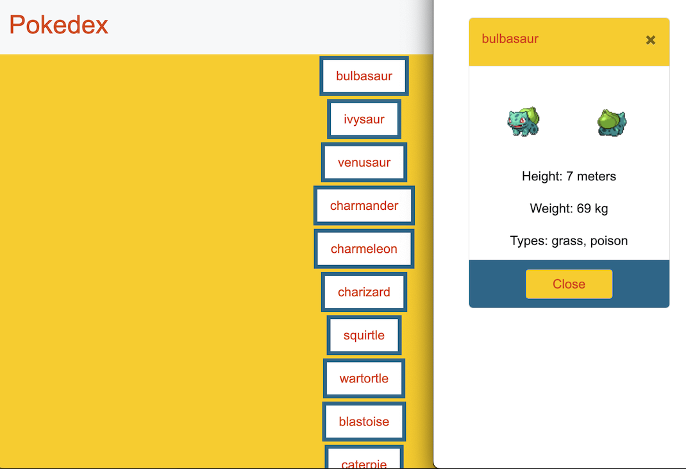
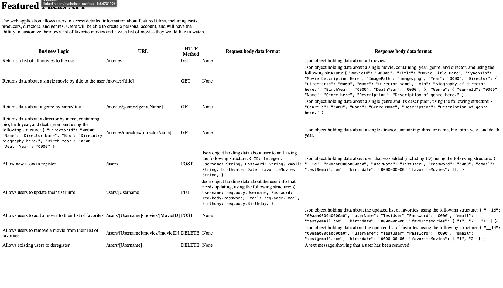
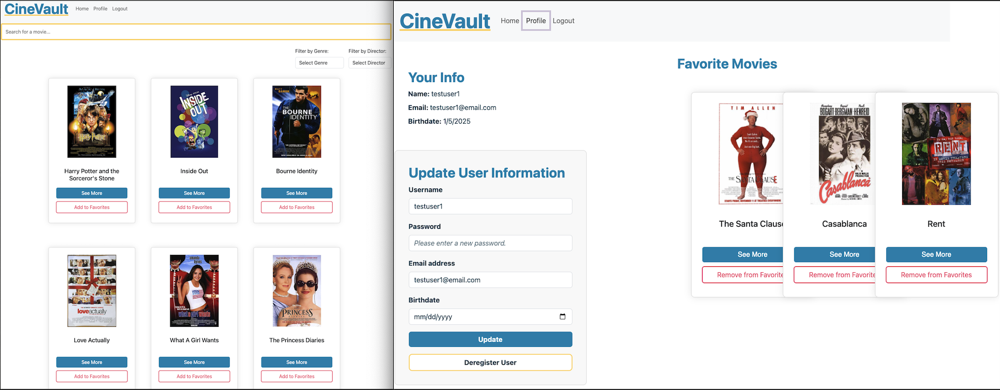
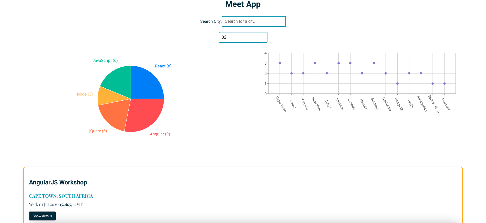
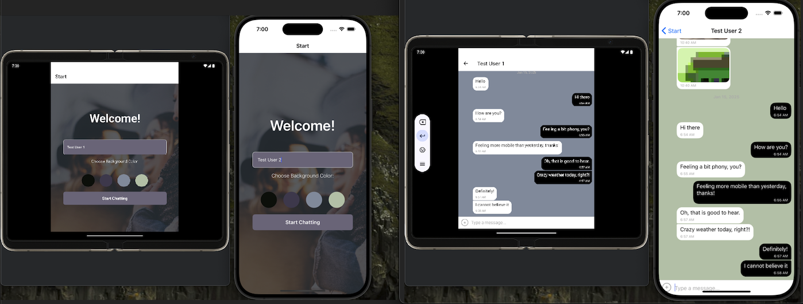
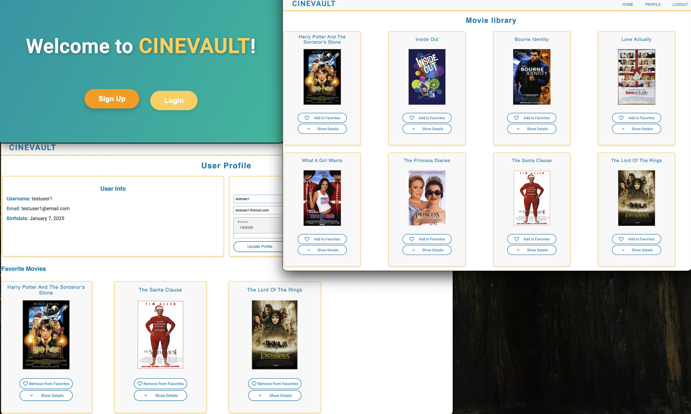

Pokédex JavaScript App
This project involved creating a Pokédex web app using JavaScript,
HTML, and CSS. It loads data from the Pokémon API to display a
list of Pokémon and allows users to click on an item to view
detailed information in a modal.
Project Objective:
The objective was to build a functional JavaScript web app that
loads data from an external API and allows users to view details
for each Pokémon.
Technologies Used:
- HTML
- CSS
- JavaScript
- Pokémon API
- Modal UI
- Fetch API
- GitHub Pages
Screenshot of the App:

Live Demo
GitHub Repository
myFlix (movie_api) - Movie Web Application
This project is the server-side component of the "myFlix" movie
web application (movie_api), where users can access detailed
information about movies, directors, and genres. Built with the
MERN stack, it includes authentication, movie data management, and
user profile management.
Project Objective:
The objective was to create the server-side of a movie app for
movie enthusiasts to access detailed information, manage profiles,
and create favorite lists.
Technologies Used:
- Node.js
- Express
- MongoDB
- Mongoose
- JWT Authentication
- Heroku
- Postman (API testing)
Screenshot of the App:

Live Demo
GitHub Repository
myFlix React App
The myFlix React App is a single-page application (SPA) built
using React. It allows users to manage and view movie details,
save favorites, and manage profiles. The app is fully responsive
and provides a rich user experience.
Project Objective:
To develop a client-side interface of the movie web app using
React, which interacts with a server-side API to display and
manage movie-related data.
Technologies Used:
- React.js
- React Router
- React Redux
- Bootstrap
- Parcel
- CSS/SCSS
- REST API integration
- JWT Authentication
Screenshot of the App:

Live Demo
GitHub Repository
Meet App
This project is a serverless, progressive web application (PWA)
built with React using test-driven development (TDD). It
integrates with the Google Calendar API to fetch upcoming events
and utilizes AWS Lambda for serverless functions.
Project Objective:
To create a PWA for managing upcoming events with calendar
integration, ensuring optimal UX on all devices.
Technologies Used:
- React.js
- AWS Lambda
- Google Calendar API
- Test-Driven Development (TDD)
- Progressive Web App (PWA)
- SCSS
Screenshot of the App:

Live Demo
GitHub Repository
Mobile Chat App
The app allows users to communicate through messages, share
images, and send their location. It leverages Firebase for
real-time data storage, Firestore for chat persistence, and the
Gifted Chat library for the chat interface. Accessibility
features, including screen reader compatibility, are integrated
into the app. This React Native project demonstrates a fully
functional chat app with multiple features: anonymous
authentication using Firebase, real-time messaging using
Firestore, offline data storage with AsyncStorage. media sharing
with support for uploading images via the device's camera or
gallery, location sharing using device GPS, and screen reader
support for accessibility.
Project Objective:
To build a chat app for mobile devices using React Native. The app
will provide users with a chat interface and options to share
images and their location.
Technologies Used:
- React Native
- Expo
- Firebase for authentication and Firestore
- Gifted Chat for the chat UI
- Firebase Cloud Storage for storing images
- AsyncStorage for offline message storage
- Geolocation for sharing location
Screenshot of the App:

GitHub Repository
CineVault Angular App
CineVaultAngularClient is a single-page, responsive movie
application built using Angular. It interfaces with the existing
server-side code (REST API and database) to provide movie
enthusiasts with detailed information on movies, directors, and
genres, while allowing them to create personalized profiles to
save their favorite movies.
Project Objective:
Using Angular, build the client-side for an application called
myFlix based on its existing server-side code (REST API and
database), with supporting documentation.
Technologies Used:
- Angular (version 9 or later)
-
Angular Material: responsive design for a seamless user
experience on all devices
- User authentication and registration forms
- Dynamic routing: for smooth navigation between views
- Hosted on Github Pages
Screenshot of the App:

Live Demo
GitHub Repository